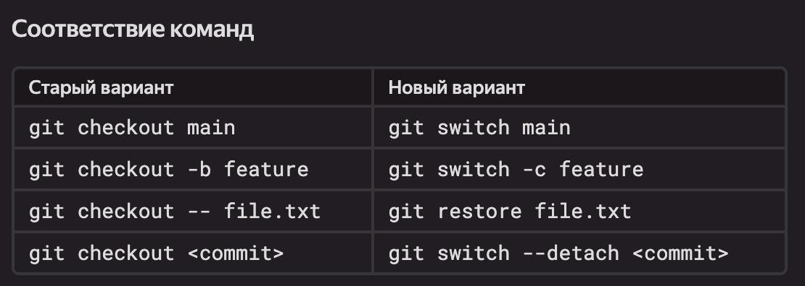
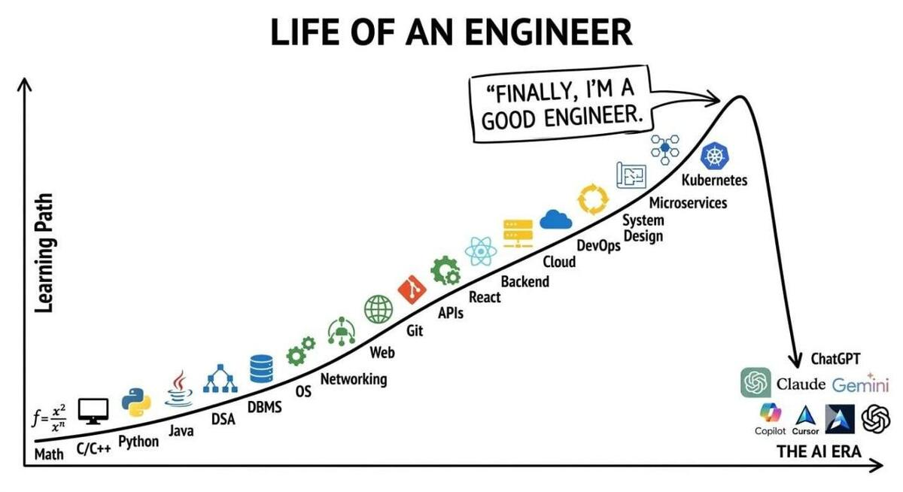
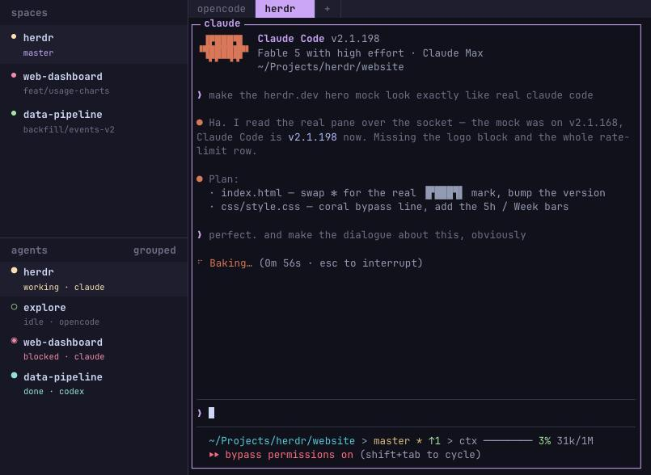

Страница 1
Узнал про git switch
posted on 2026-09-24

Наблюдая за нейронками, за тем, как они работают, порой узнаёшь для себя что-нибудь новенькое, какой-нибудь приёмчик, который каким-то образом прошёл мимо тебя.
Сегодня я узнал таким образом про команду git switch, которая появилась в версии 2.23, вышедшей аж в 2019 году. Интересно, как я проспал целых семь лет?!
На картинке к этому посту как раз показаны различия между git checkout, которым я до сих пор пользовался, git switch и git restore. Прежде все эти функции выполнялись одной командой, а затем появились две новые. При этом и legacy-поведение до сих пор поддерживается.
Короче, век живи — век учись. Теперь буду git switch использовать, как молодёжь и LLM :)
Конец эпохи программирования
posted on 2026-09-18

Вот эту картинку я сегодня стырил в одном из каналов. Не смог не перепостить, потому что последние пару дней именно такие ощущения меня преследуют - что ушла целая эпоха. Раньше ты мог считать себя программистом на C++, Python или JS, а теперь мы все просто макаки, перекладывающие промпты.
При чем думаю что сейчас люди будут ещё более разделяться на две категории:
- тех кто в общем то программированием и не горел никогда
- и тех, кто любит писать код
Первые сейчас с энтузиазмом внедряют AI-first подходы и грезят о времени когда машины заменят весь ручной труд.
Вторые, даже несмотря на повсеместное использование AI будут продолжать писать код руками, хотя бы как хобби.
Я сейчас где-то между этими двумя категориями. С одной стороны, я живу на то, что платит копорация, а корпорация хочет везде и всюду внедрять AI и заменять людей. С другой, я всегда любил писать код и получаю от этого дофамин, особенно когда использую Common Lisp (его быстрый REPL очень способствует тому, чтобы ты как можно быстрее видел результат своих изменений).
При этом, даже и в хобби проектах я нет нет да и скатываюсь уже к тому, чтобы какую-то часть работы перепоручить LLM. Главное - не увлекаться этим и делегировать только задачи, которые никогда не приносили удовольствия, например обновление документации, создание тестов или HTML вёрстка.
А у вас какие ощущения от AI гонки?
В чём сложность форматирования кода на Lisp?
posted on 2026-09-16

В нынешние времена, когда большую часть кода пишут LLM, особенно остро встаёт проблема форматирования. Нейронки часто с этим косячат — особенно с отступами. В идеале перед коммитом они должны одной командой приводить все изменённые файлы к принятому в проекте формату.
Вы скажете, что форматирование кода — простая задача, которую давно решили. Но, к сожалению, для моего любимого Common Lisp это не так. Всё потому, что Lisp отличается от многих других языков макросами: они позволяют определять новые синтаксические конструкции, и заранее написанный форматтер может просто не знать, как правильно их форматировать.
Впрочем, тут на помощь приходят библиотеки, в которых можно задать правила форматирования кастомных макросов. Да и сами редакторы вроде Emacs + SLY пытаются с помощью разных эвристик угадать, какой стиль лучше подойдёт той или иной форме.
В целом меня устраивает то, как Emacs + SLY форматирует мой код. Но сейчас я ищу способ дать AI-агенту возможность из командной строки отформатировать Lisp-код так же, как это делает редактор. В следующих нескольких постах расскажу, какие способы попробовал и на чём в итоге остановился.
Мой сетап с Atomic Spec и Beads
posted on 2026-09-15

В одном из предыдущих постов я писал о том, что такое Atomic Spec. А в одном из последних проектов настроил упряжь так, чтобы скиллы Atomic Spec работали вместе со скиллами Beads.
Роли у них разные. Atomic Spec формирует и правит кейсы и спеки, описывающие, как должна работать система. А Beads используется для оперативного трекинга задач: хранит их статусы, контекст и связи между ними. Туда же агент складывает заметки на память, когда я прошу LLM порефлексировать и запомнить уроки на будущее.
Сложную задачу агент разбивает на этапы, и хочется, чтобы этот план переживал сжатие контекста. Если держать его только в сессии, то какие-то детали могут потеряться. С Beads агент может вернуться к сохранённым задачам и посмотреть, что уже сделано, а что ещё осталось. А так же он может запускать сабагентов параллельно и каждый из них будет работать над своей подзадачей.
Помимо прочих плюсов, агент обновляет статус каждой подзадачи и оставляет комменты по ходу работы. Потом можно достаточно легко проверить ключевые моменты: что он делал, на чём застрял и к чему пришёл. Без этого, разобраться что делал агент, пришлось бы копаясь в сессии.
Ещё у меня был активен набор скиллов Superpowers — мне нравится оттуда навык проведения брейнштормов. Только если Atomic Spec работает достаточно автономно, то когда активен Superpowers агент периодически "соскакивает" на него, и начинает писать план в стиле superpowers, а не как atomic spec.
Чтобы этого избежать, нужно явно прописать в AGENTS.md, что оркестратором выступает только Atomic Spec, а Superpowers не должен перехватывать управление. Так у агента остаётся один понятный порядок работы, а Beads хранит её текущее состояние и накопленные заметки.
А ещё у Beads есть возможность шарить задачи между участниками команды и мерджить изменения базы. Под капотом там Dolt — база данных с версионированием, ветками и слиянием изменений. Идея похожа на работу с ветками в Git, только здесь речь о данных трекера. Эту часть я пока не опробовал, но интересно посмотреть, как она поведёт себя в командной работе.
• Atomic Spec — скилл для работы по этой методе • Beads — код и описание возможностей
Отсчет времени в разметке на GitHub
posted on 2026-09-05

Недавно исследовал, как выглядят комментарии Codex в pull request на GitHub. В некоторых из них увидел время, показывающее, как давно агент сделал ревью. Сначала подумал, что это какая-то обычная часть интерфейса GitHub, но оказалось — нет.
В markdown разметку GitHub можно вставить специальный элемент <relative-time>. Ему передаётся момент времени, а на фронтенде он сам превращается в понятную надпись вроде «5 minutes ago». И продолжает её обновлять, даже если страницу не рефрешить.
Например, выглядит это так:
<relative-time datetime="2026-09-05T12:00:00Z">
5 сентября 2026
</relative-time>
Я сделал простой gist, где можно посмотреть на это вживую.
Мне кажется, такой элемент особенно хорошо подходит для документации. Можно пометить функцию как устаревающую и написать, что она будет удалена из API в определённую дату. Вместо статичной даты читатель увидит, сколько дней осталось до удаления.
Прикольно то, что relative-time — не внутренний компонент GitHub. Это отдельный веб-компонент, который можно поставить в свой проект.
Herdr вместо tmux для работы с несколькими AI-агентами
posted on 2026-08-31

У меня обычно одновременно запущено несколько AI-агентов: один что-то пишет в одном проекте, другой разбирается с багом в другом, третий ждёт, пока я отвечу на вопрос. Раньше для этого я поднимал tmux-сессии.
Tmux отлично решает базовую задачу: процессы не умирают при закрытии терминала, есть окна и панели. Но когда агентов становится несколько, проверять их состояние не очень удобно. Приходится переключаться между панелями и смотреть: он ещё думает, закончил или уже ждёт от меня решения?
Недавно попробовал Herdr. Это тоже терминальный мультиплексор: есть workspaces, вкладки и панели. Но в боковой панели он ещё показывает состояние агентов: работает, заблокирован вопросом, закончил работу или уже просмотрен. Поэтому можно одним взглядом понять, куда сейчас стоит пойти, а кого лучше не трогать.
Особенно понравился remote-режим. Достаточно запустить локально:
herdr --remote user@server
Herdr сам подключается по SSH, а если на сервере нет подходящей версии, ставит совместимый бинарник и поднимает удалённую сессию. Интерфейс при этом остаётся локальным: по умолчанию используются мои локальные клавиши. Не надо, как раньше с tmux, отдельно переносить и синхронизировать конфиг между ноутбуком и сервером, хотя конечно, SSH-доступ и окружение для самих агентов на сервере всё равно надо подготовить.
Кстати, сами настройки Herdr, более человечные, чем в Tmux. Начать хотя бы с того, что табы по умолчанию нумеруются с 1 а не с 0 и заканчивая тем, что настроечки можно менять через TUI диалоговые окна, а не только через конфиг.
Короче, попробую пожить с Herdr вместо tmux.
Собираюсь на AI Native Conf
posted on 2026-08-29
В октябре собираюсь пойти на AI Native Conf. Интересно посмотреть, что сейчас происходит вокруг разработки с AI и агентами, и послушать доклады людей, которые это всё уже пробуют в реальных проектах.
Кстати, организаторы этой конфы поделились материалами с предыдущей Agentic Dev Conf — транскрипциями докладов. Я решил собрать их в отдельный репозиторий на GitHub и дополнительно добавил README с выжимками самого важного из каждого доклада. Пользуйтесь!
Если тоже собираетесь на конференцию 20 октября — давайте там встретимся!
Залупливание кодового ассистента
posted on 2026-08-19

На днях мне понадобилось добавить в 40ants-bots поддержку клиента мессенджера MAX. Раньше библиотека работала только с Telegram, а теперь хочется уметь поддерживать разные мессенджеры.
Решил сделать это с помощью AI-ассистента и заодно испытать подход Atomic Spec, о котором недавно писал. Попросил агента продумать внедрение, разложить его на отдельные спеки и описать в них весь нужный функционал. С этим он справился вполне неплохо.
А вот дальше хотелось максимально вайбово: дать модели реализовать всё самой, а потом только проверить результат. Тут и началось. Codex периодически останавливался и спрашивал: "Что делать дальше, хозяин?" Так происходит даже если явно попросить действовать автономно, решать максимум вопросов по дороге и иногда делать коммиты.
Я задумался: сейчас много пишут, что агентов надо запускать в цикле. Но как запустить цикл, если агент в случайный момент просто заканчивает работу?
Оказалось, что в Codex есть режим /goal. Передаёшь ему конечную цель, например «реализовать поддержку MAX по спекам и прогнать тесты». Дальше Codex хранит цель отдельно от очередного сообщения: после остановки проверяет, достигнута ли она, и запускает следующий заход, если нет. Агент должен либо показать, что работа действительно завершена, либо признать настоящий блокер.
То есть автономность здесь создаёт не промт «РАБОТАЙ АВТОНОМНО», а рантайм, у которого есть понятие незавершённой цели. В этом режиме Codex несколько часов работал над задачами из спек и вот только что сообщил о финальном результате. Теперь пойду смотреть, чего он там назалупливал.
Кстати, заодно решил посмотрел есть ли подобное в OpenCode. В нём такого режима из коробки нет, но есть плагины. danshapiro/opencode-goal-plugin старается буквально воспроизвести поведение Codex: после остановки снова запускает агента и не ставит лимитов по числу заходов, времени или токенам. Полная остановка — только когда модель доказала завершение, сообщила о блокере или её остановил человек.
prevalentWare/opencode-goal-plugin делает похожую вещь, но с предохранителями: бюджетами, лимитом автоматических ходов, проверкой отсутствия прогресса, учётом дочерних задач и compaction. А watzon/opencode-goal продолжает работу более консервативно: если в очередном ходе не было вызовов тулов, он не продолжает бесконечный разговор модели с собой.
Получается, danshapiro — для тех, кто хочет максимально буквальный /goal из Codex. prevalentWare — для тех, кто хочет оставить агента работать над большим проектом, но с ограничителями.
Надо будет обязательно сделать визуализацию таких циклов в Codabrus: смотреть, как кодовый ассистент сам себя залупливает, гораздо веселее, чем просто читать чат.
Что такое Atomic Spec и зачем он кодовому ассистенту?
posted on 2026-08-16
В предыдущем посте я упоминал про навык использования Atomic Spec. Расскажу, что это такое и почему этот подход особенно интересен, когда код пишет AI-ассистент.
Обычно требования к фиче живут в задаче, обсуждении и голове автора. Ассистент получает короткую формулировку, находит похожий код и начинает действовать. Пока задача маленькая, этого хватает. Но чем она длиннее и чем больше в ней исключений, тем проще забыть исходное намерение и сделать технически аккуратную, но неправильную вещь.
Atomic Spec предлагает хранить требования как набор маленьких «атомов»: один *.spec.md — одна единица знания. У атомов есть иерархия: система, домен, use case и сценарии. Внутри файла сначала лежит то, что не зависит от конкретного фреймворка: намерение, доменные правила, критерии приёмки и ограничения. Ниже — API, детали реализации и план тестов.
Самая важная для меня часть здесь — доменные правила. Это не «проверить поле в форме» и не «вызвать такой-то метод». Это правила предметной области, которые должны оставаться верными независимо от того, на чём написан код. Например: пользователь не может зарегистрироваться с уже занятым email, заказ нельзя оплатить дважды, а скидка не должна сделать сумму отрицательной. Когда такие правила явно записаны, у ассистента появляется не только задача, но и границы, которые нельзя случайно сломать при рефакторинге.
В Atomic Spec это превращается в последовательный процесс. Сначала аналитик фиксирует намерение, правила и критерии приёмки. Затем разработчик добавляет техническую спецификацию и код. Потом тестировщик проверяет, что каждый сценарий и каждое доменное правило покрыты тестами. Между этапами есть gate-проверки: если в требованиях остались противоречия или реализация не покрывает правило, следующий этап не начинается.
Сам skill для кодового ассистента играет роль оркестратора. Он декомпозирует задачу на атомы, переключает роли аналитика, разработчика и тестировщика, валидирует результаты и придерживается соглашений для веток и коммитов. Получается не магический промпт «сделай правильно», а повторяемый маршрут: задача → требования → код → тесты. И все эти артефакты ссылаются на один источник.
Конечно, для исправления одной опечатки это избыточно. Но на проекте, который развивается неделями, такая дисциплина даёт ассистенту устойчивый контекст и возможность понять, почему код устроен именно так.
Сейчас я пробую применять эту методологию для нескольких своих проектах и использую skill, созданный одним из моих коллег.
Осторожно: skill с сюрпризом!
posted on 2026-08-12

В одном из последних проектов я решил попробовать подход Atomic Spec. Это когда системные требования фиксируются в отдельных файлах, чтобы кодовый ассистент мог сверяться с ними при добавлении новых фич.
Начал искать skill для работы с Atomic Spec и наткнулся на GitHub репу lovely392/atomic-spec. На первый взгляд — вроде бы свежая и улучшенная версия. Но устанавливать его не спешите.
Похоже, автор взял существующий репозиторий, внёс косметические правки и залил результат как новый. Это не fork, поэтому связи с исходным проектом на GitHub не видно.
А дальше в README начинается совсем странное. Вместо инструкции по установке навыка предлагается скачать ZIP-архив, распаковать его и запустить файл на Windows. Причём там отдельно объясняют, как пройти системные предупреждения и продолжить запуск. Для skill-а кодового ассистента это выглядит, мягко говоря, подозрительно.
То есть получается такой вирус, который нужно установить самому. И это особенно неприятно в эпоху кодовых ассистентов: ассистент вполне может прочитать README, сходить по ссылке, скачать архив и выполнить инструкцию. В итоге вместо нового skill-а на компьютер может попасть какой-нибудь троян.
Это хороший повод помнить, что skills, MCP-серверы и их инструкции — тоже часть supply chain. Перед установкой стоит посмотреть, откуда взялся репозиторий, является ли он форком, что именно менялось и почему «навык» вдруг требует запустить .exe.
А тем, кому интересно попробовать Atomic Spec в работе, вот оригинальный репозиторий. Там Atomic Spec — это именно методология и skill для кодового ассистента, а не Windows-приложение из архива.
Created with passion by 40Ants